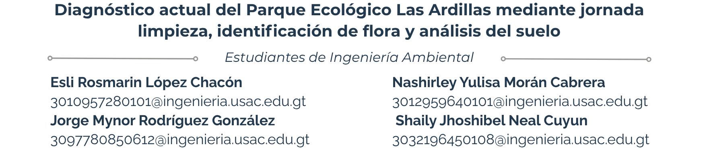
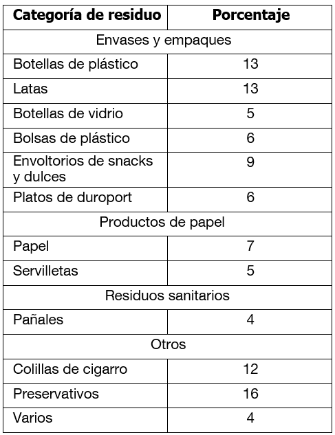
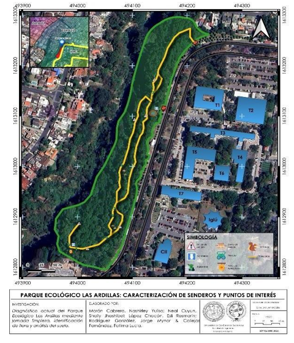
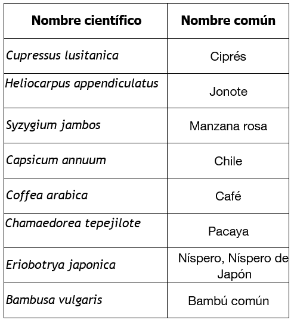
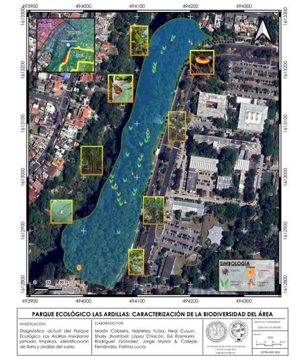
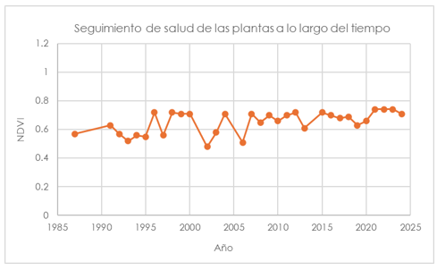
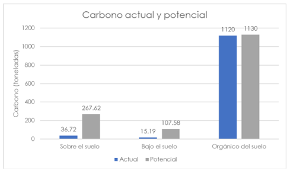
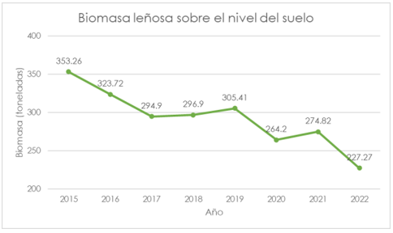

9 Diagnóstico actual del Parque Ecológico Las Ardillas mediante jornada limpieza, identificación de flora y análisis del suelo

9.1 Resumen
El Parque Ecológico Las Ardillas, ubicado dentro del campus central de la Universidad de San Carlos de Guatemala, tiene una historia de conservación que busca ofrecer un espacio de esparcimiento y educación ambiental. El problema identificado fue el deterioro del área y la falta de información sobre sus especies. El objetivo del trabajo fue promover la conservación mediante jornadas de limpieza y caracterización ecológica. Se empleó un enfoque de campo, utilizando caminatas para registrar especies con fotografías y aplicaciones para identificar flora y fauna, además de medir propiedades del suelo, cobertura arbórea y riesgos ambientales. Los resultados mostraron 4,733 especies vegetales, 108 mamíferos, 11 anfibios y 290 aves, con 2,94 hectáreas de cobertura arbórea y temperatura promedio de 18,62 °C. Este trabajo contribuye a la educación ambiental, fomenta la interacción estudiantil, facilita la conservación del ecosistema y promueve el conocimiento y disfrute sostenible del parque.
9.2 Abstract
The Las Ardillas Ecological Park, located within the Central campus of the University of San Carlos of Guatemala, has a history of conservation aimed at providing a space for recreation and environmental education. The identified problem was the area’s deterioration and lack of information about its species. The study’s objective was to promote conservation through cleaning campaigns and ecological characterization. A field-based approach was used, with walks to document species using photography and apps to identify flora and fauna, as well as measurements of soil properties, tree cover, and environmental risks. Results showed 4,733 plant species, 108 mammals, 11 amphibians, and 290 birds, with 2.94 hectares of tree cover and an average. temperature of 18.62 °C. This work contributes to environmental education, encourages student interaction, supports ecosystem conservation, and promotes sustainable knowledge and enjoyment of the park.
9.3 Palabras clave
Diagnóstico Parque Ecológico Las Ardillas, limpieza, flora, análisis suelo, especies, biodiversidad, conservación
9.4 Introducción
El Parque Ecológico Las Ardillas, ubicado dentro de la Universidad de San Carlos de Guatemala, constituye un espacio natural de gran importancia ecológica y social, utilizado como lugar de recreación y aprendizaje ambiental. Este estudio, desarrollado por estudiantes de Ingeniería Ambiental en el marco de sus prácticas intermedias, tuvo como objetivo promover la conservación del parque mediante jornadas de limpieza, registro de especies y levantamiento de información ambiental. Para ello, se emplearon herramientas tecnológicas como la aplicación iNaturalist, que permitió subir fotografías e identificar científicamente árboles, hongos, mariposas, aves y otros animales, y QGIS junto con aplicaciones de GPS para el análisis geoespacial del área. Además, se utilizaron plataformas para estudiar biomas, ecorregiones, carbono actual y potencial, biomasa leñosa, propiedades del suelo y riesgos ambientales, incluyendo sequías, los cuales resultaron bajos. Entre las especies observadas se destacan la hierba mora cimarrona, la pacaya, la plantación de café, y mariposas como la Dirsena clujil, así como diversos árboles de interés ornamental y ecológico. El enfoque adoptado permite comprender el estado del ecosistema y genera un vínculo con la comunidad estudiantil, incentivando la educación ambiental y motivando a los estudiantes y visitantes a conservar y mantener este parque ecológico, asegurando su sostenibilidad y disfrute a largo plazo.
9.5 Artículo
Desarrollo del estudio
El estudio se enfocó en tres ejes centrales, los cuales son:
- Jornada de limpieza
La jornada de limpieza se llevó a cabo el 12 de agosto de 2025 en el Parque Ecológico Las Ardillas, ubicado dentro del campus universitario. El objetivo fue evaluar el estado de contaminación por residuos sólidos en el área y realizar una intervención de remediación.
La convocatoria para voluntarios se realizó a partir del 4 de agosto de 2025 mediante dos estrategias principales: la publicación de un boletín oficial en la cuenta de Instagram del proyecto (cuenta: pea_usac_), dirigido a la comunidad universitaria y general, y la colocación de pancartas informativas en los tablones de anuncios del edificio T3 de la Facultad de Ingeniería. Adicionalmente, se solicitó la colaboración de catedráticos de la Facultad para promover la actividad entre los estudiantes. En el boletín se indicó el horario, equipamiento necesario y las políticas de la actividad. El día de la jornada se contó con la participación de treinta voluntarios. Estos fueron divididos en dos equipos, cada uno asignado a un guía. La metodología de recolección consistió en que cada equipo iniciara la limpieza desde los extremos opuestos del sendero principal del parque, avanzando hacia un punto de encuentro central. Esta estrategia permitió cubrir la totalidad del área de estudio de manera sistemática. Todos los residuos sólidos recolectados fueron concentrados en el punto de encuentro para su registro fotográfico, como evidencia del material retirado.
- Identificación de flora
La presente actividad se desarrolló mediante observaciones y registros realizados con las aplicaciones iNaturalist y Seek, las cuales permitieron georreferenciar cada punto de observación en distintas zonas del sitio, logrando una representación de la biodiversidad presente. El inventario de especies se realizó durante una visita al área de estudio, en la que se llevó a cabo el recorrido por los senderos. Durante este recorrido se registraron las especies observadas mediante documentación fotográfica, asegurando la identificación de cada especie. Esta sección fue realizada con el asesoramiento de la estudiante de Ingeniería Ambiental, Fátima Lucía Callejas Fernández, quien brindó orientación en los procedimientos y técnicas de registro de especies.
- Propiedades del suelo
El estudio se realizó por medio de la plataforma Restor, que utiliza bases de datos globales de suelos, clima y vegetación para generar estimaciones a nivel local. Se seleccionó el área del parque que son 4.14 hectáreas, obteniendo 12 indicadores del lugar. Los datos fueron sistematizados y graficados para mejor interpretación. Fue realizado con el asesoramiento de la estudiante de ingeniería ambiental, Fátima Lucía Callejas Fernández, quien tiene acceso a la plataforma de pago.
Resultados obtenidos
- Jornada de limpieza
La jornada de limpieza permitió la recolección de cuatro bolsas de residuos sólidos, exclusivamente a lo largo del sendero principal por motivos de seguridad, sin abarcar las áreas laterales de vegetación densa del parque. Tras una inspección visual y clasificación in situ de los residuos, se determinó la composición porcentual de los mismos, la cual se detalla en la Tabla 1. La categorización se realizó según el material y el tipo de producto desechado.

Figura 9.1: Composición porcentual de los residuos sólidos recolectados durante la jornada de limpieza en el sendero del Parque Ecológico Las Ardillas

Figura 9.2: Mapa de ubicación y recorrido del Parque Ecológico Las Ardillas
- Identificación de flora

Figura 9.3: Especies de flora más representativas identificadas en iNaturalist en el Parque Ecológico Las Ardillas
La tabla presenta las especies vegetales más representativas del área de estudio, registradas y verificadas a través de iNaturalist. Comprende árboles, arbustos, frutales, plantas ornamentales y cultivos tradicionales, reflejando la diversidad y riqueza de la flora presente en la zona.

Figura 9.4: Mapa de registro de especies presentes en el Parque Ecológico Las Ardillas

Figura 9.5: Gráfico sobre la evolución de la salud de la vegetación en el Parque Ecológico Las Ardillas, evaluada mediante NDVI, 1987-2024.
- Propiedades del suelo
La plataforma Restor, brindó la siguiente información:
- Bioma: bosques tropicales y subtropicales de coníferas.
- Ecorregión: bosques de pino-encino de Centroamérica.
- Carbono: sobre el suelo actual se obtuvieron 36.72 toneladas y potencial 267.62 toneladas. Bajo el suelo el actual 15.19 toneladas y potencial de 107.58 toneladas. Orgánico del suelo, actual 1120 toneladas y potencial 1130 toneladas.

Figura 9.6: Gráfico correspondiente al carbono actual y potencial
- Biomasa leñosa: tiene tendencia decreciente entre 2015 con 353.26 toneladas y en el 2022 con 227.27 toneladas.

Figura 9.7: Gráfico correspondiente a la biomasa leñosa sobre el nivel del suelo
- Profundidad del agua: 10.43 m
- Riesgo de sequía: bajo.
- Riesgo de erosión: alto.
- Clima: temperatura media anual de 18.62 °C y precipitación anual de 1134 mm.
- Edafología: con pH 5.97 que es ligeramente ácido e índice de acides de 0.71 de condiciones húmedas.
- Topografía: el parque tiene una elevación entre 1474 y 1485 msnm, donde la media es de 1479 msnm.
Discusión de resultados
- Jornada de limpieza
Los resultados de la jornada de limpieza revelan un patrón de contaminación en el parque, predominantemente asociado a residuos de consumo inmediato y de carácter sanitario, lo que refleja los hábitos de los usuarios del espacio.
La categoría más significativa fue la de envases y empaques, la cual agrupó cerca del 37 % del total de los residuos. Esto indica una fuerte relación entre actividades de esparcimiento en el parque y el consumo de productos envasados, considerando que la mayoría de estos envases pertenecían a marcas de bebidas embriagantes; se puede concluir que muchos universitarios acuden al parque a consumir alcohol para gozar de la privacidad que este otorga.
Un hallazgo particularmente crítico es la alta proporción de desechos no clasificados (otros), representando un 32 % de la recolección. Las colillas de cigarro (12 %) son un contaminante de lenta degradación que libera metales pesados y nicotina en el suelo y el agua, representando un riesgo toxicológico para la fauna del parque. La presencia de pañales y preservativos sugiere usos inadecuados del espacio que trascienden la mera disposición incorrecta de residuos comunes, apuntando a problemáticas de orden social y de educación cívica sobre el uso de las áreas verdes públicas. Este tipo de actividades pueden originarse por el relativo sentimiento de privacidad existente en el parque, pues su densidad de visitantes no es tan alta en comparación con la cantidad de estudiantes que visitan el campus central.
La metodología de recolección, limitada al sendero principal por seguridad, permite afirmar que la contaminación aquí reportada es representativa de las zonas de mayor tránsito peatonal. Sin embargo, es probable que la contaminación en las áreas laterales de vegetación densa sea diferente y posiblemente mayor, al actuar estas como zonas de acumulación menos visibles. Este es un factor para considerar como limitación del estudio y una variable para futuras investigaciones.
En conclusión, los resultados demuestran que la jornada de limpieza fue efectiva para remediar puntualmente el problema y caracterizar la naturaleza de los residuos. No obstante, la composición de los desechos indica que la solución de fondo no reside únicamente en la recolección, sino en la implementación de estrategias integrales.
Una de ellas, la implementación de mayores recipientes donde almacenar la basura, pues el recorrido dejó en evidencia lo largo que es el tramo del sendero principal y los pocos recipientes a disposición de los estudiantes, así como su deteriorado estado.
- Identificación de flora
Los resultados obtenidos mediante el registro de especies en iNaturalist muestran una diversidad significativa de flora en el Parque Ecológico Las Ardillas. La cobertura vegetal está dominada por ciprés (Cupressus lusitanica), que representa aproximadamente el 75 % del total, las especies frutales, como níspero (Eriobotrya japonica) y otras afines, constituyen alrededor del 15 %, mientras que el 10 % restante corresponde a especies de sotobosque, incluyendo café, pacaya, izote, matorrales y algunas plantas ornamentales (López, 2021).
Mediante la plataforma Restor se estimó que, considerando las diferentes categorías de especies, la región podría albergar hasta 4,733 especies de plantas, lo que proporciona una visión general de su riqueza florística potencial. En cuanto a la cobertura arbórea actual, se registra un total de 2.94 ha, con una pérdida acumulada de 0.12 ha entre 2001 y 2023, según los registros disponibles.
Los datos del NDVI muestran fluctuaciones en la salud y densidad de la vegetación, demostrando que los valores del NDVI se mantienen mayormente entre 0.5 y 0.74, indicando una cobertura vegetal moderada a alta, con picos de 0.72-0.74 en varios años recientes, lo que sugiere una tendencia positiva en la vitalidad de la flora del parque.
En términos de manejo ambiental, estos resultados evidencian la importancia de monitorear periódicamente la vegetación mediante índices como el NDVI, ya que permiten identificar áreas con posible deterioro y evaluar la efectividad de las medidas de conservación implementadas. Además, en los últimos años se ha mantenido una cobertura vegetal.
- Propiedades del suelo
Los niveles de captura de carbono, tanto sobre como debajo del suelo, solo representan el 14 % del valor potencial. Todo esto evidencia que no se está aprovechando, y que hay reducción de la biomasa leñosa.
El riesgo alto de erosión confirma la vulnerabilidad del parque, empeorada por la inclinación del terreno y la escasa cobertura vegetal en algunas áreas. A pesar de que el riesgo de sequía es bajo, la profundidad del agua es de 10.43 m. Esto indica una limitación en la disponibilidad hídrica superficial.
El pH de 5.97 es levemente ácido, adecuado para las especies de encino y pino, lo que confirma la ecorregión de bosques de pino-encino de Centroamérica. La acidez de 0.71 restringe las reforestaciones con especies que sean más vulnerables.
Los valores climáticos con 1134mm de precitación anual y temperatura media anual de 18.62 °C con investigaciones regionales indica que es un bosque tropical y subtropical de coníferas que tiene condiciones tables, pero la disminución de biomasa requiere medidas restaurativas.
9.6 Conclusiones
- El Parque Ecológico Las Ardillas mantiene una biodiversidad significativa, con más de 4,700 especies vegetales potenciales, 290 aves, 108 mamíferos y 11 anfibios, lo que evidencia el cumplimiento del objetivo de caracterización ecológica.
- La jornada de limpieza logró recolectar residuos sólidos en el sendero principal, identificando que el 37 % correspondía a envases y empaques y un 32 % a desechos críticos como colillas de cigarro, pañales y preservativos, lo que permitió caracterizar el problema de contaminación en el área.
- Los datos de suelo y cobertura arbórea confirmaron la existencia de 2.94 hectáreas de vegetación, un pH de 5.97 y riesgos ambientales como erosión alta y reducción de biomasa, lo cual aporta evidencia científica sobre el estado del ecosistema.
- El uso de herramientas tecnológicas como iNaturalist, QGIS y Restor demostró ser efectivo para el registro de especies, la evaluación ambiental y el fortalecimiento de la educación ambiental en los estudiantes.
- El trabajo cumplió con su objetivo central al promover la conservación del parque, mediante acciones de limpieza, levantamiento de información ecológica y vinculación de la comunidad universitaria con el espacio natural.
9.7 Recomendaciones
- A las autoridades universitarias: instalar más recipientes para desechos en puntos estratégicos del parque y dar mantenimiento regular a los existentes, ya que la jornada de limpieza evidenció deficiencias en la gestión de residuos.
- A los estudiantes y visitantes: adoptar prácticas responsables durante sus visitas al parque, evitando el consumo de alcohol y la disposición inadecuada de desechos sanitarios, principales contaminantes identificados en el estudio.
- A la Facultad de Ingeniería y programas de investigación: dar continuidad al monitoreo de flora, fauna y cobertura arbórea mediante iNaturalist, QGIS y NDVI, garantizando datos actualizados sobre la salud del ecosistema.
- A los gestores ambientales de la USAC: implementar proyectos de reforestación con especies nativas de pino y encino para mitigar el riesgo de erosión y recuperar la biomasa leñosa perdida.
- A la comunidad universitaria en general: participar activamente en campañas de educación y sensibilización ambiental, reforzando el vínculo con el parque y promoviendo su conservación como espacio de aprendizaje y esparcimiento sostenible.
9.8 Referencias
[1] López, D. (2021). Protección de las zonas boscosas de la Universidad de San Carlos de Guatemala para garantizar la absorción y almacenamiento de gases de efecto invernadero. Sistema Guatemalteco de Ciencias del Cambio Climático. sgccc.org.gt
[2] Plataforma de monitor ecológico. restor.eco
[3] Restor (2025). Resultados de propiedades del suelo del Parque Ecológico Las Ardillas.